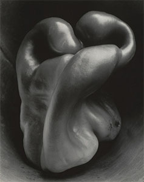

Young Lee

ถ้อยคำบนผิวหน้า:
ความต่อเนื่องและการขยายการบันทึกป้ายที่เริ่ม ณ “ตลาดสารพัด” ย่านฮวังฮักดง
งานชุดนี้เริ่มจากความเป็นท้องถิ่นของตลาดของมือสอง ป้ายแสดงเอกลักษณ์ของพื้นที่ผ่านรูปทรงที่เน้นตัวอักษรและกลุ่มคำที่จัดหมวดได้ จากนั้นขยายไปสู่ผลงาน สันติภาพและการรวมชาติ ที่สำรวจความจริงของการแบ่งแยก และควบคู่กันฉันเก็บสะสมป้ายลายมืออย่างต่อเนื่อง ผลงานที่สะสมถูกจัดระเบียบเป็นนิทรรศการเดี่ยวที่ Label Gallery แล้วพัฒนาต่อด้วยความร่วมมือหลายครั้ง กระบวนการนี้ช่วยให้ขยายขอบเขตของงานพ้นจากการทำซ้ำเชิงเครื่องจักร เปิดรับเทคนิคถ่ายโอนภาพและวัสดุที่เคยมองข้าม ด้วยชุด เกล็ด (ถ่ายโอน) และ เสื้อแจ็กเก็ตหลวม (ถุงพลาสติก) ฉันก้าวไปสู่การสร้างสรรค์เชิงรูปทรงที่กระทำการอย่างเข้มข้นบนฐานของ “ตัวอักษร” เอง

สิ่งที่ไม่อาจลดรูปได้:
จากเวลาที่ไม่เป็นเส้นตรงสู่ความรู้สึกเชิงนิเวศ–จริยธรรม
แรงบันดาลใจจากบทกวี “พุทราและผึ้ง” ของพัคคยองรี ฉันบันทึกภูมิทัศน์เมืองที่พืชพรรณและสิ่งประดิษฐ์มนุษย์ปะปนกัน ฉันสำรวจแนวคิดและอารมณ์นามธรรมผ่านวัตถุและสถานการณ์ที่เป็นรูปธรรม การรับรู้อย่างรู้สึกต่อชีวิตและความตาย การก่อรูปและการคลายตัวของประธาน กลายเป็นแกนสำคัญของงาน เมื่อรวมกับความคิดต่อท่าทีเชิงภววิสัยของภาพถ่าย การปฏิบัติการจึงขยายโดยการค้นพบและตอบสนองต่อโครงสร้างอินทรีย์ ค่อยๆ หันจากทฤษฎีใหญ่ไปสู่ความรู้สึกในชีวิตประจำวัน

โครงสร้างระหว่างดำเนินการ:
การบันทึกเหตุการณ์และการค้นพบแบบจำลองเชิงชนิด
ชุดงานที่บันทึกเรือนสมัยอาณานิคมในใจกลางเมือง แม้ชื่อพื้นที่จะว่า “ชุงมูโร” แต่ก็มักถูกรับรู้ว่าเป็นสถานที่ชวนให้นึกถึงประวัติศาสตร์ เมื่อสภาพแวดล้อมภายนอกเปลี่ยน การรับรู้ต่อความเป็นท้องถิ่นก็เปลี่ยนเช่นกัน เครือข่ายที่หนาแน่นยิ่งขึ้นค่อยๆ ข้ามพรมแดนและขยายอย่างยืดหยุ่น ทำให้ความเป็นท้องถิ่นเลือนลง ขณะเดียวกันลักษณะร่วมเชิงโครงสร้างกลับเด่นชัด งานนี้ติดตามกระแสของ “แบบจำลองเชิงชนิด” เพื่อบันทึกและค้นพบ
เส้นด้ายพันกัน โถจันทร์
เครื่องย้อนเวลาไม่มีวันมาถึง โลกถูกประกอบขึ้นใหม่ครั้งแล้วครั้งเล่ารอบๆ ความทรงจำที่สำคัญ ไม่ปรากฏ “ข้อเท็จจริงที่เป็นกลาง” อย่างแท้จริง เครื่องนั้นจึงไร้ประโยชน์ ไม่มีต้นทางและไม่มีบทสรุปสุดท้าย
หากบอกว่าฉันถ่าย “ป้าย” ในแฟ้มผลงานดูราวกับว่า ตลาดสารพัด (2007) คือจุดเริ่ม แต่แท้จริงนั่นคือผลลัพธ์ บางทีเป็นเหตุด้วย ย้อนสิบปี 1997–1998 หลังทัศนศึกษา แม่ตำหนิที่ฉันถ่ายป้ายบอกทางและคำอธิบาย ตอนนั้นฉันก็แทบไม่ถ่ายคน ย้อนอีกสิบปี 1986–1987 ฉันจับมือแม่เดินบนถนนหน้า ตลาด อ่านป้ายไม่หยุด แรกๆ แม่ชม แต่พอเหนื่อยก็ขอให้พอ ภาพถ่ายยุคนั้นหาไม่เจอ แม่ไม่ได้ยึดติดกับภาพถ่าย ย้ายมาอยู่วอนจูแล้วก็หายไปแทบหมด รูปครบเดือนหรือขวบปีที่เหลืออยู่ แม่บอกว่ายกให้ร่างทรงเพราะมีคนทักว่าฉันอาจอายุสั้น ตอนนี้ฉันอายุมากกว่าพ่อแล้ว บางทีนั่นก็ได้ผลกระมัง
สำหรับฉัน ต่อให้ทำม้วนฟิล์มหายหรือไฟล์ต้นฉบับสูญไป ก็ถ่ายใหม่ได้ ฉันไม่มองโลกเป็นลำดับเหตุการณ์เฉพาะ แต่เป็นการประกอบโครงสร้างซ้ำๆ ฉันไม่ชอบพูดเชิงนามธรรม แต่แนวโน้มนั้นก็คอยโผล่ การสาวเวลาราวกับสาวเส้นด้ายไม่มีความหมาย เหมือน โถจันทร์ รูปทรงเดิม เพียงเปลี่ยนทิศทางมอง เราถูกสร้างให้รับรู้ “วงกลม” ทางเรขาคณิตที่ไม่เคยมีอยู่จริง โลกแบบเกสตัลท์ บางทีนั่นคือพันธนาการใหญ่สุด ระหว่างอุดมคติกับความจริงมีความไร้เรี่ยวแรงอยู่
การสูญภาพทั้งหมดเป็นเรื่องลำบาก แต่ไม่ใช่สิ่งที่ทำใหม่ไม่ได้ วิชาปฏิบัติสื่อผสมของอาจารย์อี จู-ฮยอง ที่มหาวิทยาลัยคิมยอง มีการบ้านให้ขูดฟิล์มเพื่อขยายภาษา ฉันผ่านที่เก็บหุ่นโชว์ของคณะแฟชั่น จึงถ่ายผ่านช่องหน้าต่าง ประตูล็อก แทบไม่มีใครเข้าออก มุมมองอื่นจึงไม่มี ฉันส่งฟิล์มที่ขูดแล้ว อาจารย์บอกว่า “ถ้าถ่ายได้เหมือนเดิมทุกประการ จะให้คะแนนเต็ม” ฉันรู้ว่าผลการเรียนไม่ดีนัก อย่างไรก็คงไม่เปลี่ยน แต่เพราะรู้เงื่อนไขอันจำกัดยิ่งในวันนั้น ฉันจึงตอบว่าทำได้ ประตูยังคงล็อก ฉันยืนที่เดิม แต่ตำแหน่งหุ่นเปลี่ยนไป ฉันเข้าใจว่าคำว่า “ภาพเดียวกัน” ไม่มีอยู่จริง ไม่เพียงเพราะความย้อนกลับไม่ได้ หากเพราะตัวโครงสร้างขององค์ประกอบก็ไม่หวนซ้ำ ถึงอย่างนั้น ห้องนั้นก็ยังล็อก และหุ่นก็ยังยืนอยู่ เหมือนไม่มีอะไรเปลี่ยน
ฉันขาด “ข้อเชื่อม” ไม่มี “ความฝัน” แล้วจะไปทางไหน? ตอนประถมอาจเคยเขียนว่า “นักวิทยาศาสตร์” หลังจากนั้นไม่จำได้ ฉันมาเรียนภาพถ่ายเพราะเอกสารการเรียนที่มีนางแบบสวย ในช่อง “อาชีพมาแรง” มีสาขาจัดงานอีเวนต์ และสาขาที่เกี่ยวข้องคือภาพถ่าย ฉันหลุดเข้ามาติดอันดับอย่างยากเย็น ทุกวันนี้มองย้อนกลับไป ภาพถ่ายน่าจะเหมาะกับฉันกว่า เอกสารแบบฝึกหัดกองราวของใหม่ แต่มักเฉลยชี้ผิดแปลก วันหนึ่งฉันก็ไม่ไว้วางใจ จะมองแต่ผิวหน้าไม่ได้ ฉันไม่ได้ตั้งใจทำแบบฝึกหัดอื่นๆ เป็นพิเศษด้วย ฉันหา “ความสนใจ” ได้ยาก ที่บ้านมีเพียงกล้องอัตโนมัติ 35 มม. ของซัมซุง เรียกได้ว่าเข้าเรียนภาพถ่ายแทบ “ไร้กล้อง” ฟังดูผิดธรรมดา แต่ฉันไม่รู้สึกประหลาด ทุกวันนี้ฉันยังทำต่อ เพราะเคยทำมาแล้ว ฉันไม่ฝืนตัวเองนัก และก็ไม่ถนัดเลิกล้ม การหา “ข้อเชื่อม” สำคัญที่สุด
ฉันสะสมใบเตือนการเรียนจนเต็มแล้วเข้ากองทัพ เดิมคิดจะสมัครนาวิกฯ ให้ตรงกำหนดกลับเข้าเรียน แต่มีคนห้าม ด้วยผู้สมัครทหารบกมีมาก ฉันจึงเข้าประจำการเดือนกุมภาพันธ์ ในช่อง “บุคลิก” ฉันเขียนว่า “ดูเหมือนเก็บตัว แต่หน้าด้าน” แม่พูดถูก การอยู่ในที่กันดารปลุกประสาทสัมผัสที่ยากจะได้สัมผัสอีก: หลับตามืดกว่าความมืด ต้องใช้มือคลำดวงตาที่เปิดอยู่ อุณหภูมิความรู้สึกที่ −45° คนจะมองหน้ากันเงียบๆ แล้วหัวเราะเสียงดัง ก่อนง่วง แขนจะเริ่มเย็นก่อน ใบเมเปิลยามโพล้เพล้ และท้องฟ้ายามคืนที่แน่นดาว — ไม่ใช่คำอุปมา ผ่านกล้องมองกลางคืนไม่มีช่องว่างจริงๆ นับแต่นั้นฉันไม่เคยรู้สึกแบบนั้นอีก บางทีจึงไม่ค่อยสนใจท่องเที่ยวหรืออาหาร หลังจากตักดินจนเหงื่อแตก ข้าวเหนียวกับเครื่องเคียงธรรมดาก็อร่อย พ่อมาจากแทกูเก่า สอน “คัมภีร์อักษรพันตัว” และให้ “อานาลักต์สำหรับเด็ก” ในวันเด็ก เขาไม่ใช่ “คนมีรสนิยม” แม่รู้ดี ฉันคงอ่านเพียงต้นเล่มแล้ววาง เขาก็ไม่คาดหวังให้ฉันเข้าใจ “อักษรพันตัว” ก็เช่นกัน เรียนไปนิดหน่อย—เป็นเพียงทิศทางหนึ่ง
ฉันชอบวรรคหนึ่งจาก ไท่เกินถาน: “ผู้หลงใหลของประหลาดย่อมไร้วิสัยทัศน์ ผู้ยืนหยัดเดียวดายย่อมยากรักษาจริยา” ฉันไม่แน่ใจว่าเกณฑ์รับรู้สูงหรือว่าชาชิน แต่ฉันรู้ว่ามันทำให้ฉันเล่าเสียยืดยาว ฉันสนใจสิ่งรอบตัว ถ่ายภาพสามัญ และเล่าเรื่องไร้เดียงสา อาจเพราะในสนามนี้สองสิ่งนั้นแทบเข้ากันไม่ได้ ฉันมักรู้สึกว่างานของฉันไม่ดึงตา จึงส่งผลให้ขณะเลือกองค์ประกอบและตัวแบบ ฉันไม่ไล่ล่าความดราม่า กลับเข้าเรียน ฉันก็ “ตั้งใจ” แบบคนอื่นราวครึ่งเทอม แปลว่ามาสายลดลงและส่งงานตรงเวลา น่าจะเป็นงานเซลฟ์พอร์ตเทรต ดูภาพอ้างอิงแล้วอัดขาวดำส่ง แทบไม่มี “กระบวนการ” ฉันกลับเข้าใจ punctum เร็วเกินไป: ปานสีน้ำตาลบนหลังฉัน เพิ่งนึกได้เมื่อครู่ แม่มัก “อัญเชิญ” พ่อทุกครั้งที่ฉันวางระเกะระกะ บางครั้งทุกวันนี้ก็ยังเป็นอยู่ ฉันไม่แม้แต่จำได้ว่ามันเอียงไปด้านไหน
ช่วงหนึ่งฉันเริ่มหลบเลี่ยงภาพที่ “ทำให้กระอักกระอ่วน” ความกระอักกระอ่วนที่ว่าไม่ต่างจาก “คมแผล” ของบาร์ต สิ่งที่เข้ารหัสไม่ได้กลายเป็นเหมือน “ใบอนุญาต” ให้งาน กระนั้น ในฐานะวิธีการถ่ายภาพ หากจำเป็นฉันก็ใช้ แนวโน้มนั้นเด่นชัดขึ้นเมื่อเรียนต่อ ป.โท ระดับปริญญาตรีฉันทดลองหลายวิธี และบางคราใช้ “คมแผล” ตรงๆ ฉันเรียนต่ออย่างคนหลบหนี มองเพื่อนๆ ที่ทำงานในแบบของตน ฉันเข้าใจว่าไม่จำเป็นต้องทำให้ภาพถ่าย “ดูไม่เป็นภาพถ่าย” และฉันก็ไม่อยากเลี่ยง จึงกลับสู่ศูนย์กลางโดยธรรมชาติ ฉันค้นหาจุดแยกในยุคที่ช่างภาพสมัยใหม่ไปถึงความสมบูรณ์ทางเทคนิค ภาพถ่ายคือบันทึกอันแจ่มชัดของ “ขณะ” ความชัดเจนนั้น เมื่อหันอีกมุม ทำให้เราสงสัยและปฏิเสธความจริง และสามารถแปรเป็นนามธรรมที่สุด สิ่งที่พวกเขาทำสำเร็จผ่านความสมบูรณ์ทางเทคนิคคือเปิดทางสู่วิสัยทัศน์เชิงแนวคิด กล่าวคือ ดั่ง โถจันทร์ ที่ทำให้ “วาดวงกลม” ได้ รูปทรงที่ประกอบด้วยความไม่สมมาตรอย่างสิ้นเชิงและศูนย์กลางหลากหลาย ระบบปิดที่ไม่มีทิศทางการเปลี่ยนแปลง มีเพียงการประกอบใหม่ มันคือโลกที่ต้องอาศัยการรับรู้ทางเรขาคณิตเพื่อทำให้เสร็จสมบูรณ์ การยอมรับความไม่สมดุลระหว่างสิ่งที่ไม่อาจเทียบส่วน เท่านั้นที่ทำให้เป็นไปได้
บทความนี้ไม่ใช่คำอธิบายผลงาน
ฉันกำลังพยายามทำความเข้าใจงานของตัวเองมากกว่าที่เคย ไม่นานมานี้เองฉันจึงเริ่มเอ่ยคำว่า “ผลงาน” ก่อนหน้านั้นฉันพูดเพียงว่า “ถ่ายรูป” “ผลงาน” ไม่ได้หมายถึงผลลัพธ์เท่านั้น แต่รวมถึงท่าที ทิศทาง และความสัมพันธ์ ฉันหลีกเลี่ยงถ้อยคำเชิงนามธรรมที่ฟังเหมือนคำประกาศ และเพราะการปฏิบัติและผลลัพธ์มิได้ผูกแน่นเสมอไป ฉันจึงผัดผ่อน ทว่าไม่กี่ปีที่ผ่านมา หลังการสมัครและการรีวิวพอร์ต ฉันตัดสินใจนำเสนองานอย่างแข็งขันยิ่งขึ้น ฉันรู้สึกเหมือนอยู่ริมขอบ อยู่ชายขอบ ส่วนหนึ่งเพราะฉันอธิบายไม่เก่ง แต่อาจเพราะ “กลัดกระดุมเม็ดแรกผิด” เหนือสิ่งอื่นใด ฉันรู้ว่า นอกเหนือจากความสิ้นหวังชั่วคราวของฉันแล้ว ไม่มีความหวังอื่นอีก
ท่าทีต่อชีวิตแยกจากงานไม่ได้ และสื่อมีเจตจำนงจะก้าวพ้นสภาพของตนเองภาพถ่ายใช้เวลาและพื้นที่อย่างตรงไปตรงมามากกว่าสื่อใด บ่อยครั้งภาพนิ่งถูกจับคู่กับภาพเคลื่อนไหวด้วยเหตุแห่งความสะดวก แต่ทั้งสองต่างกันโดยเนื้อแท้ ภาพเคลื่อนไหวเดินตามโครงเรื่องเหตุ–ผล กระบวนการตัดต่อทำให้พิกัดเลือนและสร้างกาล–สถานอิสระ ในแง่รูปแบบจึงเหมือนจิตรกรรม คือโลกที่ประกอบขึ้น ด้วยเหตุนั้นมันอาจ “แทน” กาล–สถาน มากกว่าจะจัดการมันโดยตรง
ความรู้สึกกาล–สถานของภาพถ่ายผูกติดกับความจริงทางกายภาพ กลศาสตร์พื้นฐานทำงานอยู่ในนั้น ใน “สนาม” ที่พลวัตซึ่งความสัมพันธ์ทางการเมือง สังคม วัฒนธรรม ประวัติศาสตร์ ซ้อนทับกัน ประธาน—ในฐานะสนามเล็ก—ถือกำเนิดและสลายตัว เกิดมาโดยไม่อาจอยู่โดดเดี่ยว จึงชำนาญในการว่าด้วยโครงสร้างแห่งความสัมพันธ์ ภาพถ่ายยึดครองพิกัดทางกายภาพ แต่ไม่ใช่แค่ตำแหน่ง หากคือจุดตัดความหนาแน่นสูงของความสัมพันธ์ด้วย “สนาม” นั้นเป็นฐานของภาพถ่าย กระนั้นก็มักล้นกรอบ ขยายออก และทำให้รูปทรงพร่าเลือน
ในระบบปิด พลังงานรวมคงที่ พลังงานแปรรูปได้แต่ปริมาณไม่เปลี่ยน — กฎข้อที่หนึ่งแห่งอุณหพลศาสตร์นักพลวัตจิตสันนิษฐานว่า จิตมีแรงและทิศทางและถ่ายโอนได้ ส่วน “วัฏจักรนิรันดร์” ของนีทเชอแสดงให้เห็น—ผ่านการประกอบใหม่ของสสารจำกัดในกาลอนันต์—ความเป็นไปได้ของเจตจำนงที่ยืนยันต่อโลก ปรากฏการณ์ทางจิตวิ่งไปตามวิถีคล้ายกฎธรรมชาติและพันเกี่ยวกัน การปฏิบัติการคือการปฏิสัมพันธ์นั้น ผลลัพธ์ก้าวข้ามการฉายทาบ ด้วย “ขณะเชิงโครงสร้าง” เผยเงื่อนไขของการสั่นพ้องซึ่งปัจเจกตระหนักความเหมือนในความต่างและตอบสนอง

“เมฆ”: การฉายทาบหรือเอกภาพเชิงโครงสร้าง?
อัลเฟรด สตีกลิตซ์ นำเสนอ Equivalents ผ่านแนวคิด “ความเทียบเท่า” เมื่อเขากล่าวว่า “เมฆก็เหมือนความรู้สึกของฉัน” นั่นอาจเอนเอียงสู่การฉายทาบ—วิถีแห่งสัญชาตญาณและสุนทรียะ เขาไม่ได้อธิบายชัดเจนจึงฟันธงไม่ได้ ประวัติศาสตร์ภาพถ่ายเห็นว่าเป็นการแยกจากลัทธิจิตรกรนิยมไปสู่ปฏิบัติการอิสระ นักทฤษฎีภายหลังอ่านมันเป็น “เอกภาพเชิงโครงสร้าง”: กระบวนการกำเนิดและรูปทรงของเมฆสอดคล้องกับระลอกชีวิตของเขา แยกความต่างเหล่านี้ยาก แต่หากใครสักคนในสถานการณ์คล้ายกันพบการสั่นพ้องในภาพเหล่านั้น ก็นับเป็นการสั่นพ้อง เรารู้จากประสบการณ์ว่าไม่มีเมฆสองก้อนที่เหมือนกัน—ทั้งในความจริงและในชุดภาพ การสั่นพ้องกับงานของเขาไม่ใช่เพียงการสะท้อนเชิงสัญชาตญาณหรืออารมณ์ แต่ยังเป็นการตอบสนองเชิงโครงสร้างด้วย
คอนแทคชีทของคาร์เทียร์-เบรซง: การทำซ้ำเพื่อรับใช้รูปทรง
ฉันเข้าใจ “วิธีเชิงโครงสร้าง” ว่าเป็นการกระโดดไปสู่เวลาไม่เป็นเส้นตรง เมื่อเราโครงสร้าง–นิยาม “สนาม” อินทรีย์ มันดำรงอยู่ภายนอกเวลาแบบลำดับเหตุและผล เมื่อคอนแทคชีทของคาร์เทียร์-เบรซงเผยแพร่ หลายคนอาจผิดหวังใน “ขณะแห่งการตัดสินใจ” ชื่อฝรั่งเศสชี้ไปที่ “ภาพที่ถ่ายฉับไว” ส่วนอังกฤษคือ The Decisive Moment“สำหรับฉัน การถ่ายภาพคือ—ในเสี้ยววินาที—การรู้พร้อมกันทั้งความหมายของเหตุการณ์และการจัดรูปทรงอย่างแม่นยำที่ให้การแสดงออกดีที่สุดแก่เหตุการณ์นั้น” — อ็องรี คาร์เทียร์-เบรซงภาพของเขาราวกับเกิดขึ้นในพริบตา ไร้การครอป มีสุนทรียะแห่ง “ขณะ” อันสมบูรณ์ แต่คอนแทคชีทเผยให้เห็นการทำซ้ำนับครั้งไม่ถ้วนเพื่อให้ได้ภาพสุดท้าย เขาไปถึงผลลัพธ์ผ่านรูปทรง จังหวะ และสมดุล จับความเป็นไปได้หนึ่งท่ามกลางความแปรผันไร้ขอบเขต และด้วยการประกอบใหม่ เขายึดกุมโครงสร้างเชิงรูปทรง เขาไม่ได้ “ตัด” ส่วนของเวลาบรรทัดตรงออกมา หากแต่ย้ายความจริงไปอยู่นอกเวลา: “ขณะเชิงโครงสร้าง” แม้จะ “ชี้ขาด” ขณะนั้นก็ยังแผ่จากโครงสร้างภายในของเขา รูปทรงอาจเป็นสาระ งานของเขาคือการทำให้สิ่งนั้นเหมาะที่สุด ส่วนฉันต้องการจุดตัดให้มากขึ้น—ขณะที่เข้าถึงได้ผ่านการสั่นพ้องระหว่างโครงสร้างที่เกินเลยปัจเจก

พริกหยวก: ความงามเชิงรูปทรงของภาพถ่าย
อีกฟากหนึ่งของสตีกลิตซ์คือกลุ่ม f/64 ผู้คัดค้านจิตรกรนิยมเช่นกัน หากสตีกลิตซ์มองเห็นความเป็นไปได้ของสัญชาตญาณ f/64 ก็มุ่งสู่ขีดสุดของการแสดงออกทางภาพถ่าย ด้วยรูรับแสง f/64 พวกเขาแสดง “ความชัด” ที่รวมถึงความคมทางรูปทรง นั่นคือการย้ายสุนทรียะแห่งสายตาเชิงภววิสัยที่ภาพถ่ายเปิดเผยได้ และเป็นการค้นพบด้วย การสำรวจความเป็นไปได้ที่ต่างกันในยุคเดียวกันชวนพิศวง หลังหลุดพ้นจากจิตรกรนิยม ภาพถ่ายเริ่มสัมพันธ์กับโลกผ่านโครงสร้างภายใน–ภายนอก ขยายเป็น “สนามพลวัต” บางทีรูปทรงมิใช่เพียงสาระหรือวิธี หากยังเป็นเครื่องมือเสาะหาสารัตถะ
“ประติมากรรมไร้นาม”: ความเป็นปัจเจกเผยตัวในโครงสร้างแห่งการทำซ้ำ
คู่เบคเคอร์จัดวางสถาปัตยกรรมอุตสาหกรรมในเมทริกซ์เพื่อการเปรียบเทียบเชิงชนิดวิทยา แต่ละโครงสร้างเป็นอิสระและสังกัดแบบจำลองเชิงชนิดในขณะเดียวกัน ความแตกต่าง/เอกภาพเชิงโครงสร้างถูกทำซ้ำจนเกิดคุณค่าทางสุนทรียะ พวกเขาเรียกสิ่งนี้ว่า “ประติมากรรมไร้นาม”: การจัดระเบียบสิ่งเฉพาะและกระจัดกระจายให้เป็นโครงสร้างที่ก่อความหมาย นี่มิใช่แค่การบันทึก หากขยายสู่โครงสร้างเชิงภววิสัย ไม่มีความแตกต่างก็ไม่พบแบบจำลอง ไม่มีแบบจำลองก็ไม่รู้จักความแตกต่าง เงื่อนไขให้แต่ละภาวะดำรงตนให้เห็นคือการเข้าใจแบบจำลอง และอาจเป็นวิธีเข้าใจผู้อื่นด้วย“ความตายคือความเป็นไปได้ที่เป็นของตนเองยิ่งที่สุดของแดไซน์” — ไฮเดกเกอร์ประธานดำรงอยู่เพียงชั่วคราวในกระแส ภาวะมนุษย์ขยายไปหาผู้อื่นผ่านความเป็นปัจเจก ความตาย—ในแบบเฉพาะของแต่ละคน—เป็นเงื่อนไขเด็ดขาดของความเป็นปัจเจก และอาจเป็นเงื่อนไขของแบบจำลองด้วย เพราะมันทำให้เราจัดวางปัจเจกทั้งหลายในโครงสร้างเดียวกัน ในฐานะผู้รับรู้ “ปลายทาง” อย่างชัดแจ้ง ความรู้สึกต่อเวลาบรรทัดตรง–กายภาพของเราก่อ “สนามเล็ก” ที่มีขอบเขตชัดและเปลี่ยนแปลงอย่างอินทรีย์ สนามเล็กเหล่านี้อาจสั่นพ้องกันผ่านโครงสร้าง การก้าวข้ามเส้นแบ่งจึงเป็นไปได้ เพราะมันทำงานในฐานะ “โครงสร้างแห่งการตอบสนอง” ฉะนั้นฉันจึงรู้จักและตอบต่อโครงสร้างของอีกฝ่ายผ่านโครงสร้างของตน กล่าวอีกนัยหนึ่ง หนึ่งด้านคือการรื้อแนวโน้มของประธานที่จะปิดตัวและทำตนให้เสร็จ อีกด้านคือการขยายเครือข่ายไปสู่สนามที่ใหญ่กว่า มันเป็นวิธีการที่ไม่ทำลายและไม่รุนแรง—คือสัมผัสเชิงจริยธรรมต่อ “ระยะห่าง” ของฉัน พร้อมกันนั้น มันคือความลังเลของฉัน และคือระยะนิรันดร์ระหว่างฉันกับผู้อื่นผู้ไม่อาจทำให้เหมือนหรือเอื้อมถึง การสั่นพ้องคือความพยายามที่ดีที่สุดของฉันในการแตะต้องโครงสร้างแห่งการดำรงอยู่ของเธอ/คุณ และก็เป็นรูปแบบหนึ่งของการดำรงอยู่เช่นกัน
“อีกคนทำให้ฉันกลายเป็นวัตถุ; ใต้สายตานั้นฉันมิใช่ตนเองอีกต่อไป” — ซาร์ตร์

ภาพถ่ายไม่ได้ “พูดถึงคนๆ นี้”; มันเผยตนผ่านโครงสร้างเท่านั้น
สิ่งที่ใกล้ที่สุดอยู่ไกลที่สุด
การมีชีวิตอยู่คือการวาดกลุ่มดาวเงียบๆ โดยไม่ให้ผู้คนรู้ มากกว่าชีวิตที่เป็นระเบียบงามตาที่ “น่าจะ” มีอยู่ที่ไหนสักแห่ง ฉันกลับรู้สึกใกล้ชิดกับหมู่ดาวนายพรานที่กางออกบนยามราตรี ในลิฟต์ย่ำรุ่ง กลิ่นข้าวอ่อนๆ ในลมหายใจของคนอื่นทำให้ฉันนึกถึงคำข้าวที่กลืนฝืนในร่างกายที่ไม่ยอมรับ แม้ไม่มีใครบังคับ ฉันก็อยู่แบบนั้นไม่ได้ ต้องออกจากบ้านในความมืดจึงจะไปถึงทันเวลา—เรื่องที่ต้อง “กลืน” ให้ได้
ปลายบันได ณ จุดที่ท้องฟ้าสลัวแตะโดมอาคาร มีกิมบับของคุณย่า ดังเช่นวันนั้น ฉันไปโดยไม่รู้เรื่องแทบยืนทรงตัวไม่ไหว วันถัดมาซื้อกิมบับหนึ่งม้วน หนึ่งพันวอน? หรือหนึ่งพันห้าร้อย? ขายแบบนี้จะคุ้มไหมกันนะ ด้วยปลายแขนที่ระบมฉันยกม้วนทั้งม้วน ระหว่างเดินก็ลอกไออุ่นที่หลงเหลืออย่างทุลักทุเล เธอตื่นกี่โมงกันนะ คงเหนื่อยแสนเหนื่อย ไม่มีความอยาก ฉันกัดม้วนอย่างดิบๆ ดั่งสัตว์ป่า ท้องที่ยังกินไม่หมดหนึ่งม้วนอย่างนี้ จะไปทำอะไรเลียนแบบใครก็ไม่เหมือนจริงสักอย่าง
เหมือนในวันนั้น ไกลออกไป—บันไดหรือขอบฟ้า—ชายคนหนึ่งเดินสวนไฟถนนที่กะพริบ แจ็กเก็ตหลวมโคร่งกระพือเหมือนปีกตามก้าวเดินเบาๆ ในถุงพลาสติกสีดำยังเหลือนม 200 มิลลิลิตรสักกี่กล่องกันนะ สิ่งที่แกว่งไหวราวกับชั่งน้ำหนักที่ลดลงอยู่เรื่อยๆ คือ “เจตจำนง” ของเขาเอง
ฉันต้องรีบไปไกล แต่เขาจอดรถขวางอย่างพอดิบพอดี “เป็นระเบียบ” เสียจนดึงเบรกมือไว้เรียบร้อย กระจกหน้ารถไม่มีเบอร์โทร ฉันชะงักและมองหาวิธีติดต่ออื่น หน้าต่างหลังใสเสียจนเหมือนไม่มีอยู่จริง ฉันตั้งท่าจะก้มดูใกล้ๆ แล้วก็ถอย กลัวชนกระจกที่ไม่มีอยู่จริง ข้างในมีของกองเฉียงๆ คล้ายหนังสือนิทาน ผ้าห่มผืนเล็กโอบกล่องนมที่ซีดจนเขียวอ่อน ฉันทำเป็นไม่เห็น เดินอ้อมออกไปให้พ้นระยะสายตาเขาอย่างคนผ่านทาง แท้จริงไม่จำเป็นต้องทำถึงเพียงนั้น
ฉันผลักเขาอย่างเย็นชา—ไม่สิ ฉันต่างหากที่ถอย เพราะเขาเป็น “คนโปร่งใส” เสื้อเชิ้ตสีขาวพองฟูไปกับลม กระโปรงยาวสีดำ—แม้ไม่ลงรอยกับท่าก้าวที่ปลายเท้าเฉียงออกเล็กน้อย—กลับผลิบานราวฤดูใบไม้ผลิ ถ้า… ถ้าเขาเพียงยืนอยู่ตรงนั้นล่ะ? ตอนนี้เขาอยู่ไกลเสียยิ่งกว่าคนที่ “น่าจะอยู่ที่ไหนสักแห่ง” ไกลเหลือเกิน จึงทำให้ฉันคอยนึกถึง เขาเป็นคนที่ฉันจะพูดถึงได้ก็แต่ด้วย “ระยะห่าง” ส่วนฉัน ในระยะที่ถ้อยคำเอื้อมไม่ถึงนั้น ก็แตกกระจายทั้งตัว นานมาแล้ว ฉันปฏิบัติตัวราวกับว่ามันคือครั้งสุดท้าย
มันยังน่าพิศวง—เมื่อรู้ว่าเธอจากโลกนี้ไป ฉันใช้ทั้งคืนไปกับลมหายใจหอบถี่ การโอบ “ค่ำคืนไร้การนอน” ไว้ในอกต้องเหนื่อยล้ามากเพียงใดกันนะ บางทีเราคงเคยใกล้กันเกินไป ต่อให้โลกกลับด้านเงียบๆ อีกครา สิ่งที่เปลี่ยนในฉันก็มีแต่เริ่มใช้ “อินสตาแกรม” เลียนแบบ ฉันเพียงหวังให้ชีวิตอันกระจ้อยร่อยของฉันโปร่งใสขึ้นอีกเล็กน้อย ฉันไม่มีเวลาไตร่ตรองเรื่อง “ความจริงใจ” ฉันอยู่ตรงนี้ ใครเศร้า เชิญมาหา แค่นั้นเอง